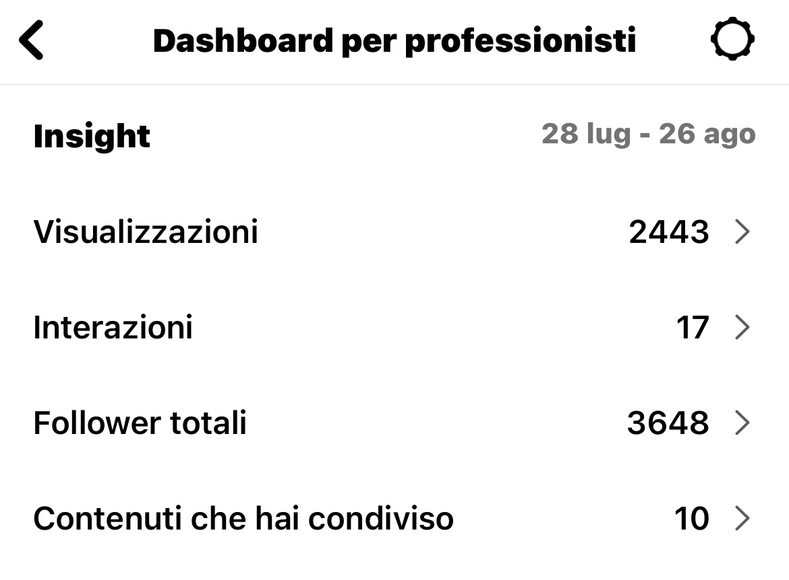
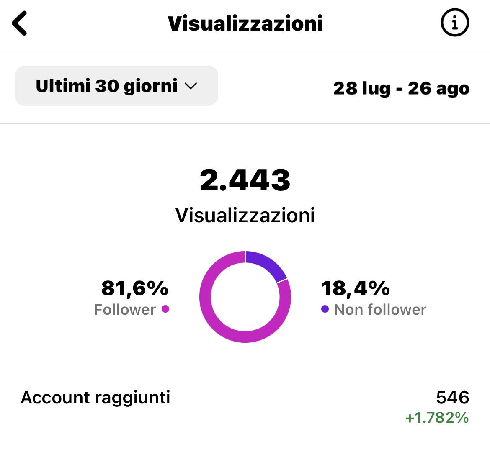
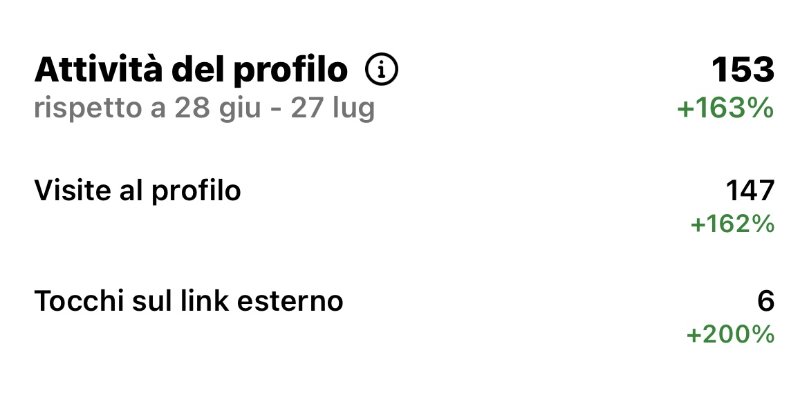

Pizza Party
Account di Customer Retention
In questo profilo sto lavorando sulla fidelizzazione dei clienti, partendo però da una base di follower inizialmente poco attivi.
Nonostante ciò, sto implementando una strategia di re-following che sta mostrando risultati positivi.
L'obiettivo è rendere il profilo più attraente dal punto di vista estetico, offrendo al contempo interazioni mirate che includono promozioni e sconti speciali presso il locale.
